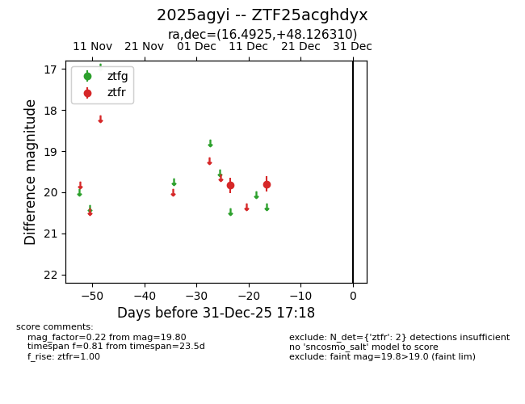
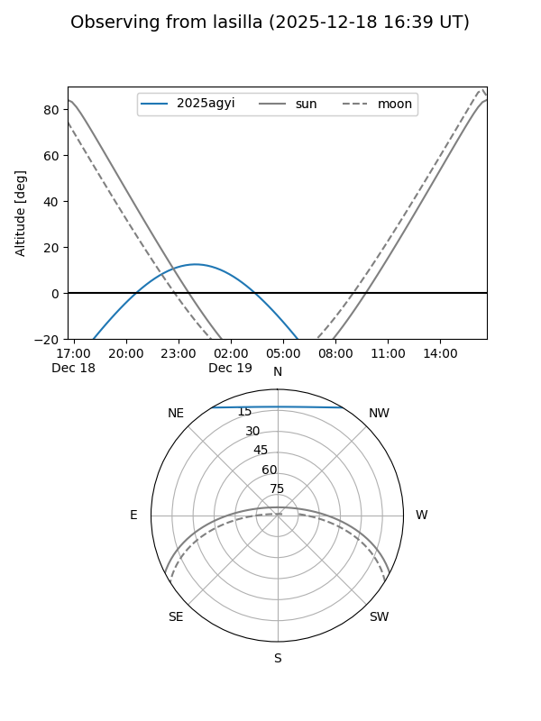
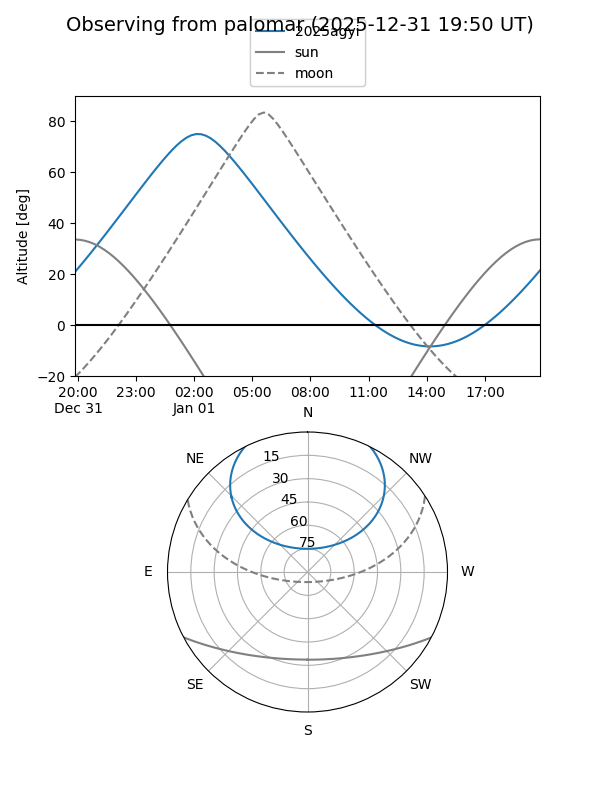

2025agyi
Target 2025agyi at 2025-12-18 11:18
Aliases and brokers:
FINK: fink-portal.org/ZTF25acghdyx
Lasair: lasair-ztf.lsst.ac.uk/objects/ZTF25acghdyx
ALeRCE: alerce.online/object/ZTF25acghdyx
TNS: wis-tns.org/object/2025agyi
YSE: ziggy.ucolick.org/yse/transient_detail/2025agyi
alt names
ZTF25acghdyx (ztf,fink_ztf)
2025agyi (tns,yse)
Coordinates:
equatorial (ra, dec) = 16.4925,+48.12631
equatorial (HMS+DMS) = 01:05:58.21,+48:07:34.72
galactic (l, b) = (125.4378,-14.67472)
Photometry
last ztfr=19.80
2 ztfr detections
Lightcurve

Visibility


Additional plots